Energi & pertumbuhan
Karbohidrat dan lemak memberi energi. Protein membantu pertumbuhan jaringan.
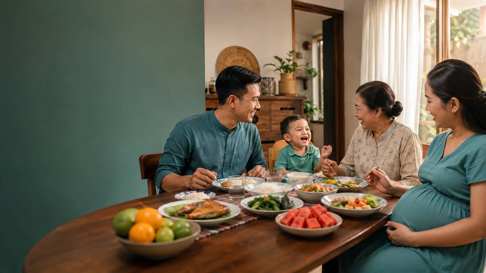
01 · Gizi dan keamanan pangan · 60 detik
Adaptasi singkat untuk ibu hamil, ibu menyusui, balita, keluarga, dan kader.
Gizi beragam. Pangan aman. Pengasuhan hangat. Tanggap keracunan.
Dipresentasikan oleh
Ummu Atiyah, S.Ag.
Sumber modul: hlm. 6–9 (halaman PDF).
02 · Orientasi · 45 detik
Sumber modul: hlm. 6–9 (halaman PDF).
Utamakan makanan beragam dan bermutu, dengan porsi sesuai kebutuhan.
Karbohidrat dan lemak memberi energi. Protein membantu pertumbuhan jaringan.
Folat untuk sel dan saraf, zat besi untuk darah, serta kalsium untuk tulang.
Kebutuhan berubah menurut trimester dan kondisi ibu—bukan otomatis makan dua kali lipat.
Sumber modul: hlm. 10–11, 30 (halaman PDF).
Isi Piringku adalah komposisi sekali makan; kebutuhan harian dibagi sepanjang hari. Karbohidrat, protein hewani dan nabati, lemak, vitamin, serta mineral perlu disusun beragam.
Sumber modul: hlm. 12–16, 18–22, 27, 31, 37–41 (halaman PDF).
Jumlah untuk satu hari, dibagi ke beberapa waktu makan.
| Kelompok pangan | Trimester 1 | Trimester 2–3 | Contoh ukuran 1 porsi |
|---|---|---|---|
| Makanan pokok | 5 porsi | 6 porsi | Nasi 100 g (¾ gelas) |
| Protein hewani | 4 porsi | 4 porsi | Ikan 50 g (1 potong sedang) / telur 55 g (1 butir) |
| Protein nabati | 4 porsi | 4 porsi | Tempe 50 g (1 potong) / tahu 100 g (2 potong sedang) |
| Sayuran | 4 porsi | 4 porsi | 100 g (1 mangkuk matang tanpa kuah) |
| Buah | 4 porsi | 4 porsi | Pisang 100 g / pepaya 100–190 g |
| Lemak | 5 porsi | 5 porsi | 5 g (1 sendok teh), termasuk lemak untuk memasak |
| Gula | 2 porsi | 2 porsi | 10 g (1 sendok makan), termasuk dalam makanan/minuman |
Sumber: modul hlm. PDF 13, Tabel 1.2 (Buku KIA 2024). Acuan modul, sesuaikan dengan kondisi ibu bersama tenaga kesehatan.
Pilih variasi makanan pokok. Tabel ini menunjukkan alternatif ukuran satu porsi.
| Pilihan makanan pokok | Berat untuk 1 porsi | Ukuran rumah tangga dalam modul |
|---|---|---|
| Nasi | 100 g | ¾ gelas |
| Jagung | 125 g | 3 buah sedang |
| Kentang | 210 g | 2 buah sedang |
| Singkong | 120 g | ½ potong |
| Roti putih | 70 g | 3 iris |
| Mi basah | 200 g | 2 gelas |
Sumber: modul hlm. PDF 13, Tabel 1.2. Ukuran rumah tangga mengikuti modul dan dapat berbeda menurut ukuran bahan. Gunakan berat gram sebagai acuan.
Perbandingan trimester 1 dan trimester 2–3. Ukuran menggunakan takaran rumah tangga.
| Waktu makan | Trimester 1 | Trimester 2–3 |
|---|---|---|
| Pagi | Lontong sayur: 1 lontong sedang Telur rebus: 1 butir · Sayur labu siam tahu: 1 mangkuk Pisang: 1 potong sedang | Nasi uduk: 2 centong · Ayam kecap: 1 potong sedang Sambal goreng: 1 potong sedang · Selada timun: 2 buah Melon: 1 potong sedang |
| Selingan pagi | Kue lontar: 1 potong sedang · Jeruk: 1 buah sedang | Panada/roti isi: 1 buah · Rujak buah: 1 mangkuk |
| Siang | Nasi putih: 2 centong · Sate ikan pusut: 1 potong sedang Tahu bumbu kecap: 1 potong sedang · Sayur ares: 1 mangkuk Pisang: 1 potong sedang | Nasi putih: 2 centong · Pepes ikan: 1 potong sedang Tahu goreng: 2 potong sedang · Sayur asem: 1 mangkuk Pepaya: 1 potong sedang |
| Selingan sore | Arem-arem: 1 buah sedang | Martabak telur: 1 buah · Melon: 1 potong sedang |
| Malam | Nasi putih liwet: 2 centong · Ayam goreng serundeng: 1 potong sedang Urap sayur: 1 mangkuk · Jeruk: 1 potong sedang | Nasi putih: 2 centong · Ayam tangkap: 1 potong sedang Sayur tempe labu siam: 1 mangkuk |
Sumber: modul hlm. PDF 14–16, Tabel 1.3–1.4. Contoh menu disesuaikan dengan kebutuhan ibu.
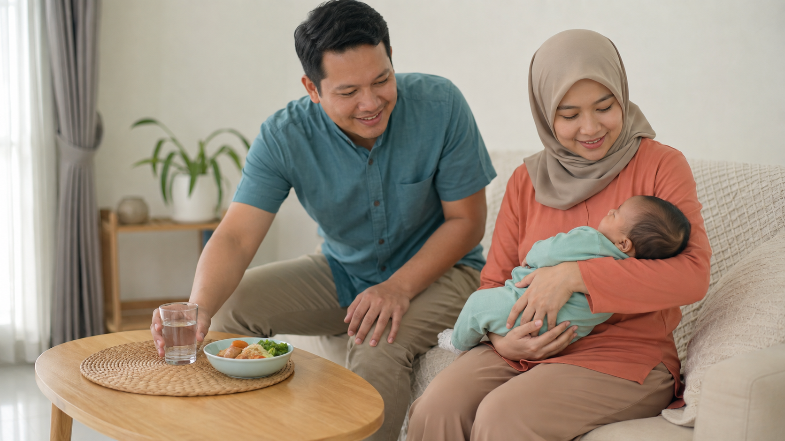
Kebutuhan meningkat selama menyusui. Jaga hidrasi dan sering menyusui. Galaktagog atau bahan pelancar ASI digunakan tanpa jaminan hasil.
Tubuh ibu membutuhkan makanan, cairan, dan dukungan yang cukup selama masa menyusui.
Pilih makanan pokok, lauk berprotein, sayur, dan buah. Porsi tambahan dapat dibagi menjadi beberapa kali makan.
Minum air putih secara teratur dan pilih makanan berkuah untuk membantu memenuhi kebutuhan cairan.
Menyusui sesering dibutuhkan membantu menjaga rangsangan produksi ASI.
Makanan atau herbal bukan jaminan ASI bertambah. Konsultasikan kesulitan menyusui kepada tenaga kesehatan.
Dorong orang tua menerapkan pola asuh otoritatif: hangat, responsif, dan tegas dalam aturan makan.
Edukasi ibu sebagai pengasuh utama agar pengetahuan dan keterampilan gizi dibangun sejak dini.
Ajak seluruh keluarga rutin ke Posyandu dan manfaatkan layanan kesehatan yang tersedia.
Sumber modul: hlm. 17–23 (halaman PDF); pesan kunci penyuluh: modul hlm. 65.
03 · ASI · 45 detik
Sejak lahir hingga usia 6 bulan, bayi cukup diberi ASI saja—tanpa air putih, madu, atau susu formula—karena saluran cernanya belum siap menerima makanan lain. Obat atau tetes vitamin hanya jika diresepkan tenaga kesehatan.
ASI mengandung antibodi (IgA) pelindung infeksi saluran cerna dan napas, prebiotik alami, serta DHA & laktosa yang dibutuhkan untuk tumbuh kembang otak bayi.
Kontak kulit (skin-to-skin) mempererat ikatan ibu–bayi. Setelah genap 6 bulan, MPASI mulai diberikan sambil menyusui tetap dilanjutkan hingga usia 2 tahun.
Sumber modul: hlm. 23–25 (halaman PDF).
07 · Tahapan makan anak · 90 detik
Tekstur dan porsi meningkat bertahap, mengikuti kemampuan makan anak.
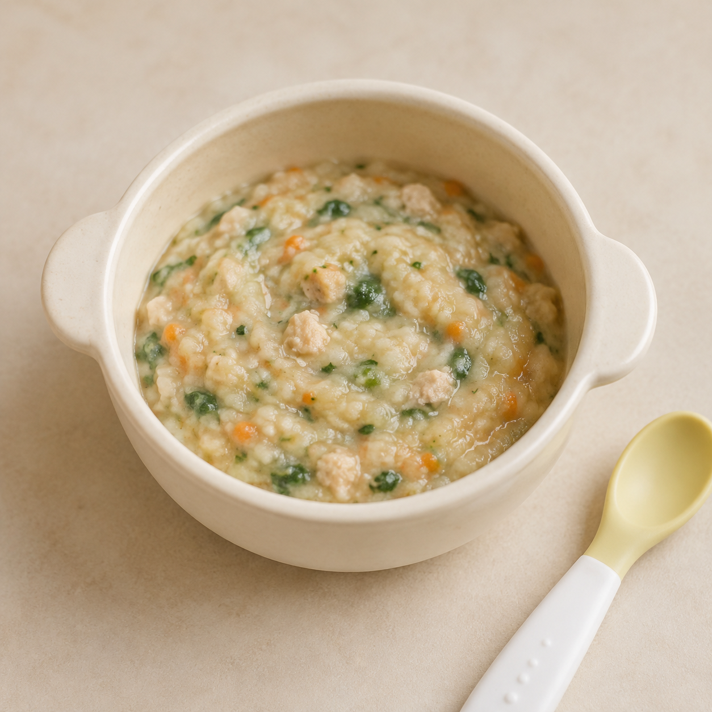
2–3 kali makan utama. Mulai bertahap hingga ½ mangkuk ukuran 250 ml.
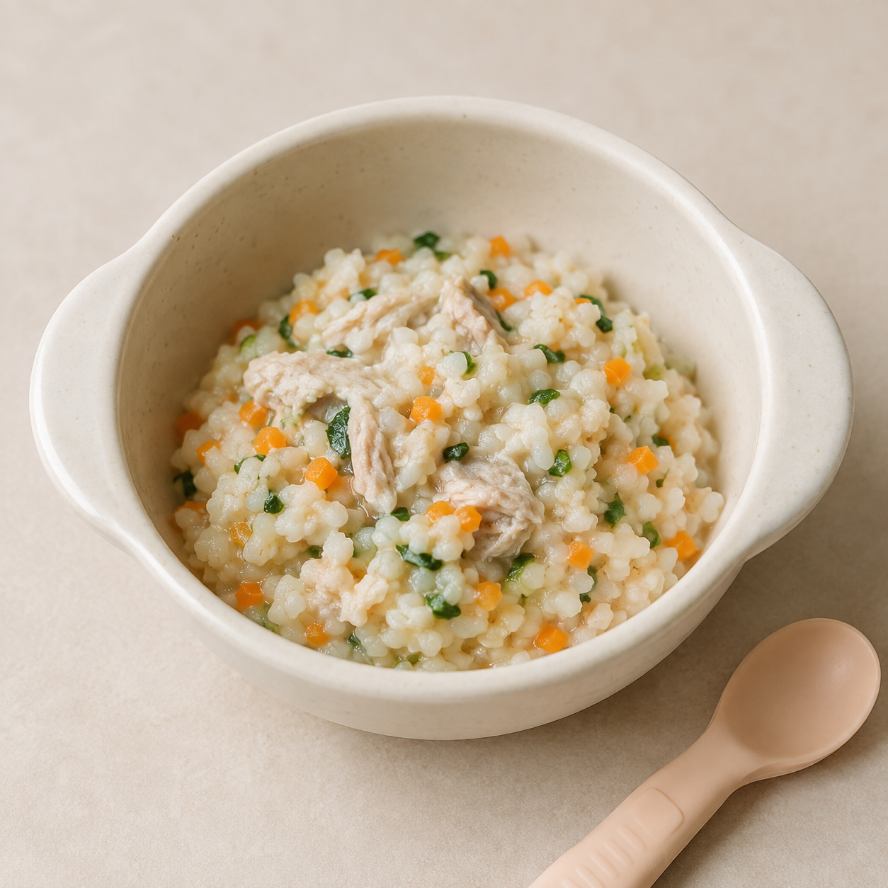
3–4 kali makan utama. Acuan porsi ½–¾ mangkuk ukuran 250 ml.
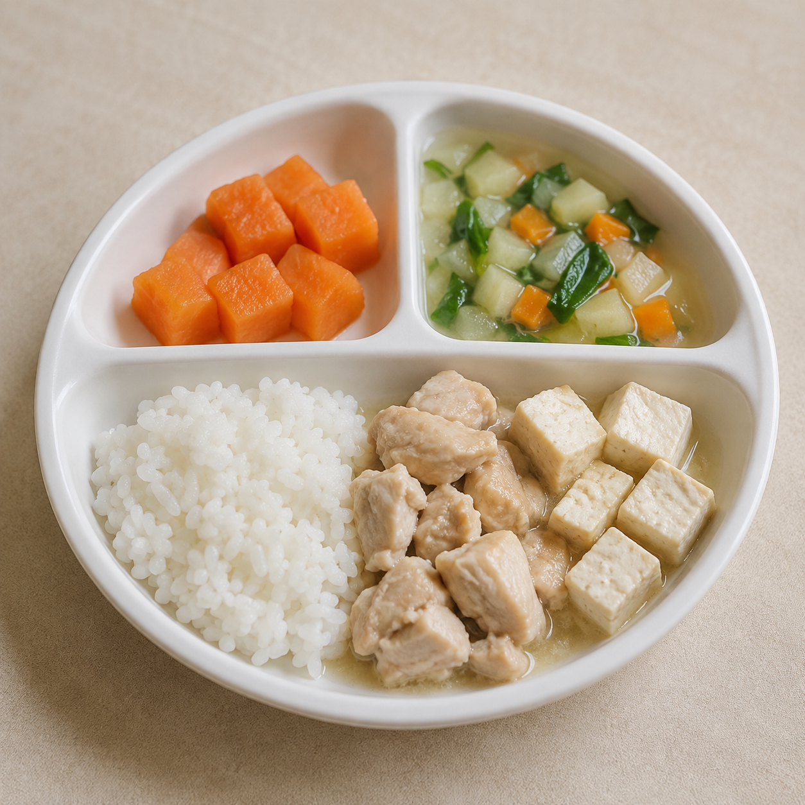
Potong kecil agar mudah dikunyah. Berikan 3–4 kali makan utama sesuai kemampuan.
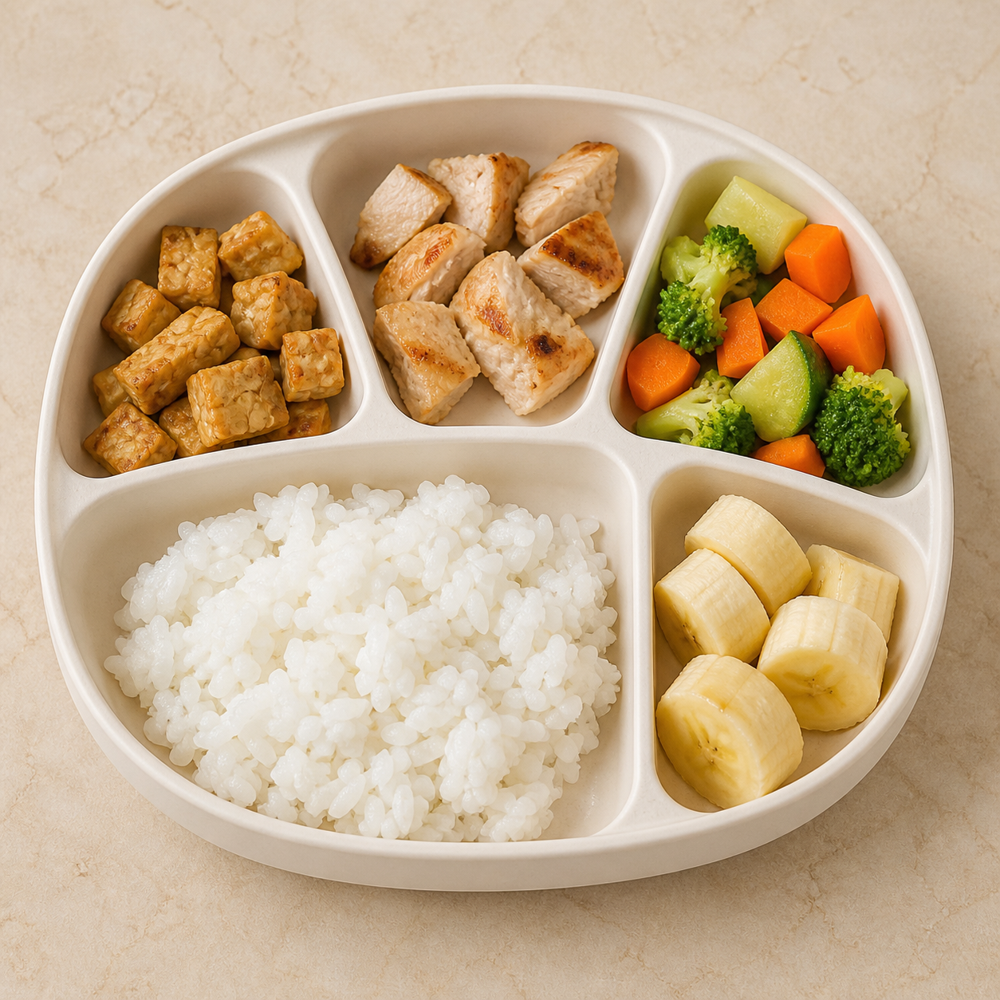
Sesuaikan porsi dengan pertumbuhan dan aktivitas. Dampingi makan dengan kasih sayang.
Sumber modul: hlm. 25–34, 36 (halaman PDF).
Bubur sup daging kacang merah • Bahan untuk 3 porsi
| Bahan | Takaran |
|---|---|
| Nasi | 50 g (6 sdm) |
| Ayam cincang | 30 g (3 sdm) |
| Telur ayam | 25 g (½ butir) |
| Buncis, wortel, kacang merah | Masing-masing 10 g (1 sdm) |
| Daun bawang, seledri | 10 g (1 batang), 1 batang |
| Kaldu ayam | 300 ml |
| Minyak untuk menumis | 2,5 g (½ sdt) |
| Bawang merah, bawang putih | Masing-masing 2 siung, haluskan |
Sumber: modul hlm. PDF 27–28, Tabel 1.10. Selingan pada sumber: jeruk 100 g (2 buah). Sajikan buah dengan bentuk yang sesuai usia dan kemampuan bayi.
Nasi tim ikan kembung telur puyuh • Bahan untuk 3 porsi
| Bahan | Takaran |
|---|---|
| Nasi putih | 115 g (12 sdm) |
| Ikan kembung | 30 g (1 potong kecil), haluskan |
| Telur puyuh | 30 g (3 butir) |
| Wortel | 15 g (1 potong besar) |
| Tomat | 10 g (1 buah sedang) |
| Minyak kelapa | 7,5 g (1½ sdt) |
| Kaldu ayam | 75 ml (⅓ gelas belimbing) |
| Pepaya | 50 g (½ potong), haluskan |
Sumber: modul hlm. PDF 29, Tabel 1.10. Label usia mengikuti resep modul. Selingan: semangka 180 g (1 potong besar), sesuaikan potongan dan jumlah.
Sesuaikan tekstur dan porsi dengan kemampuan anak. Takaran ini bukan jumlah yang harus dihabiskan.
| Waktu makan | 12–23 bulan | 24–59 bulan |
|---|---|---|
| Pagi | Bubur Manado (1 mangkuk kecil) Pepaya (1 potong) | Kentang rebus (2 buah sedang), telur kecap (1 butir) Sup tahu wortel (tahu 1 potong sedang + wortel 5 sdm) Pepaya (1 potong) |
| Selingan pagi | Talam kacang hijau (1 potong kecil) | Arem-arem (1 buah sedang) |
| Siang | Nasi putih (½ centong), semur ayam (1 potong sedang) Tahu goreng (1 potong sedang) Bobor bayam (½ mangkuk kecil) Semangka (1 potong sedang) | Nasi putih (7 sdm), soto ayam (ayam 5 sdm) Perkedel tahu (1 potong sedang) Semangka (1 potong) |
| Selingan sore | Telur gulung (½ butir) | Puding hunkwe (1 potong sedang) |
| Malam | Nasi putih (½ centong), telur dadar (1 butir) Bola-bola tempe (1 potong sedang) Sayur sop (½ mangkuk kecil), jeruk (1 buah sedang) | Nasi putih (7 sdm), botok teri basah (teri 5 sdm) Tempe goreng (1 potong sedang) Sayur sop (½ mangkuk kecil), jeruk (1 buah sedang) |
Sumber: modul hlm. PDF 32 dan 34, Tabel 1.12 dan 1.13. sdm = sendok makan.
08 · Kebutuhan spesifik · 45 detik
Sumber modul: hlm. 35, 37–41 (halaman PDF); batas penggantian: editorial keselamatan.
Contoh dari modul. Pilih bahan pengganti yang dapat ditoleransi anak.
| Makanan pemicu | Zat gizi yang perlu diperhatikan | Contoh alternatif dalam modul |
|---|---|---|
| Susu sapi | Protein, kalsium, vitamin D | Minuman kedelai*, kacang-kacangan, ikan laut |
| Telur | Protein, vitamin B12 | Daging merah, ayam, ikan, kedelai |
| Ikan laut | Protein, omega-3 | Daging, kacang-kacangan |
| Kacang tanah | Protein, lemak sehat | Daging, telur |
| Kedelai | Protein nabati | Kacang hijau, kacang merah |
Pengganti tidak selalu setara gizinya. Bahan alternatif juga dapat memicu alergi. Rencanakan pilihan bersama tenaga kesehatan.
*Modul menyebut “susu kedelai”. Minuman kedelai bukan pengganti ASI atau formula bayi.
Sumber: modul hlm. PDF 35, Tabel 1.14. Catatan batas penggantian: penjelasan keselamatan dari slide sebelumnya.
09 · Keamanan pangan · 45 detik
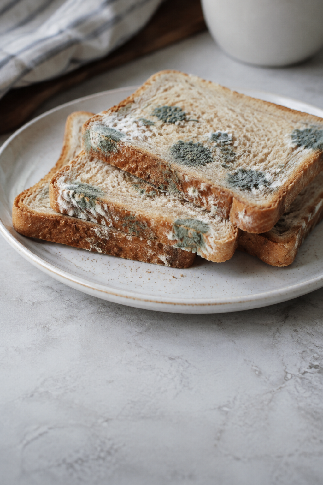
Cemaran dari bakteri, virus, parasit, atau jamur. Contoh pada gambar: roti berjamur.
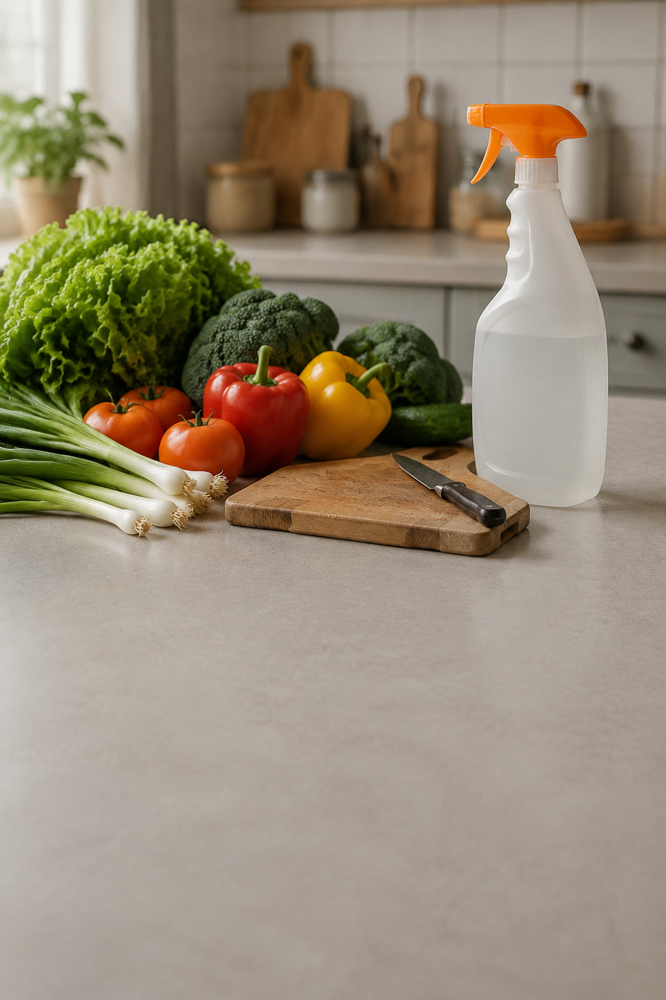
Bahan kimia yang mencemari makanan, seperti pestisida, cairan pembersih, atau boraks/formalin.
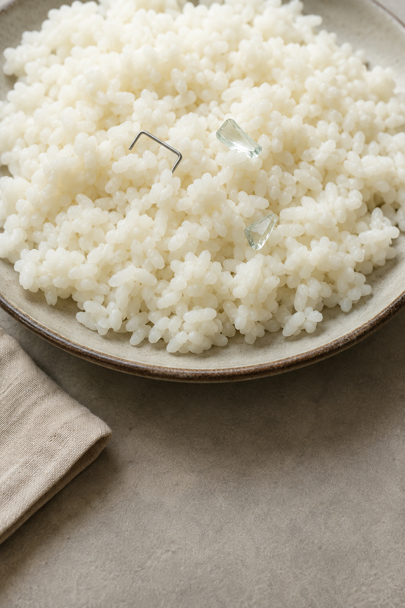
Benda asing yang masuk ke makanan, seperti pecahan kaca, staples, rambut, atau batu.
Tolak makanan dengan bau, warna, atau tekstur menyimpang dan kemasan rusak. Tampak normal belum tentu aman. Jangan uji dengan mencicipi.
Sumber modul: hlm. 42–43, 93 (halaman PDF). Gambar: ilustrasi AI.
Manfaatkan bahan yang mudah diperoleh dan terjangkau di sekitar keluarga.
| Kelompok pangan | Pilihan bahan lokal | Contoh olahan dan daerah |
|---|---|---|
| Karbohidrat | Beras, jagung, sagu, singkong, talas, ubi jalar, sukun | Nasi jagung — Jawa Timur/Madura Papeda — Maluku/Papua Tiwul dan gatot — Gunungkidul Lemet dan getuk — Jawa Tengah Binte biluhuta — Gorontalo |
| Protein hewani | Ikan laut/tawar, ayam, telur bebek, daging sapi, kerang, udang | Pepes ikan — Sunda/Jawa Barat Asam padeh — Sumatera Barat Pindang serani — Jepara Ikan kuah kuning — Maluku |
| Protein nabati | Kedelai, koro, kacang tanah, kacang hijau, lamtoro | Tempe benguk — Jawa Tengah Oncom — Sunda Sayur lamtoro — NTB/NTT Koro pedang goreng — Jawa Timur |
Variasikan dalam kelompok pangan yang sama. Sesuaikan porsi dan kondisi alergi, serta pilih olahan yang matang dan aman.
Sumber: modul hlm. PDF 37–41, Tabel 1.15. Contoh diringkas; penggantian bukan berarti berat atau seluruh kandungan gizinya sama.
Manfaatkan bahan yang mudah diperoleh dan terjangkau di sekitar keluarga.
| Kelompok pangan | Pilihan bahan lokal | Contoh olahan dan daerah |
|---|---|---|
| Sumber lemak | Kelapa, kemiri, kacang tanah, wijen, alpukat | Sayur lodeh — Jawa Gulai nangka — Sumatera Barat Pallubasa — Makassar Sambal kacang — Jawa/Bali |
| Sayur dan buah | Beragam sayuran dan buah lokal | Sayur bening bayam — Jawa Plecing kangkung — Lombok Rujak buah — Bali/Jawa Timur Sup kelor — NTT/Sulawesi |
| Sumber mineral | Bayam merah, daun singkong, ikan teri, kerang, pisang, kacang hijau | Pepes teri — Jawa Sayur daun singkong — Sumatera/Kalimantan Bubur kacang hijau — berbagai daerah |
Variasikan dalam kelompok pangan yang sama. Sesuaikan porsi dan kondisi alergi, serta pilih olahan yang matang dan aman.
Sumber: modul hlm. PDF 37–41, Tabel 1.15. Contoh diringkas; penggantian bukan berarti berat atau seluruh kandungan gizinya sama.
20 · Higiene dan sanitasi · 60 detik
Lima tujuan ini menghubungkan kebersihan proses dengan keamanan makanan yang diterima keluarga.
Pastikan makanan aman bagi seluruh sasaran MBG 3B.
Pisahkan bahan mentah, makanan matang, alat, dan area kerja.
Kurangi peluang cemaran sejak pengolahan sampai makanan dibagikan.
Jaga mutu pelayanan saat makanan bergizi disiapkan dan disalurkan.
Bangun kebiasaan bersih dan sehat di rumah, dapur, serta lingkungan.
Sumber modul: hlm. 47 (halaman PDF), bagian “Tujuan Standar Higiene dan Sanitasi MBG 3B”.
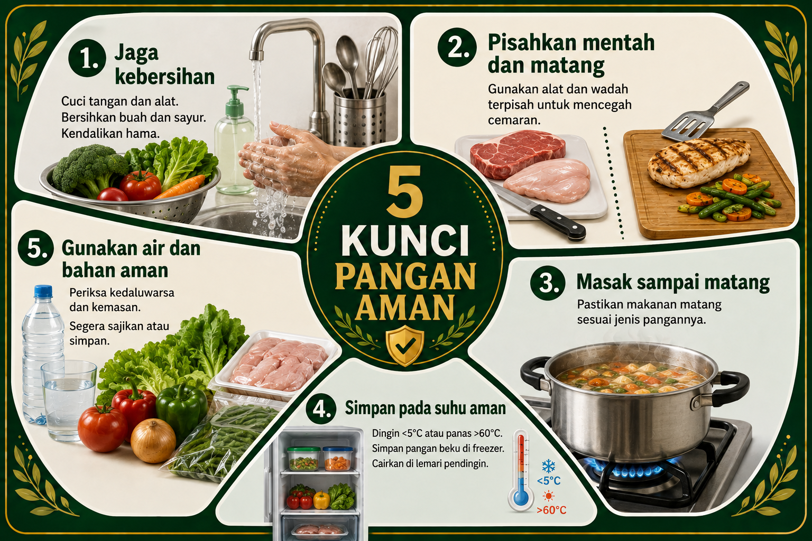
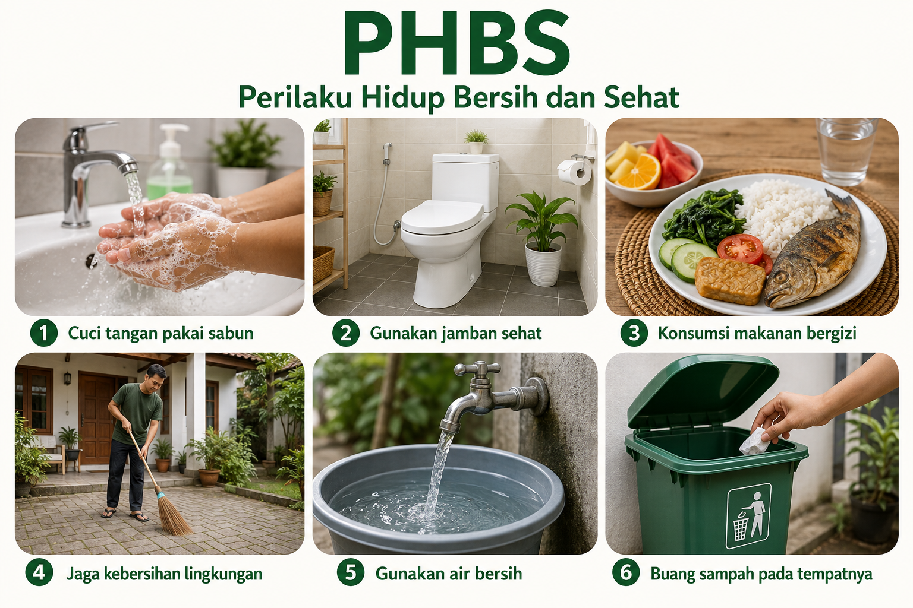
21 · Higiene dan sanitasi · 60 detik
Gunakan indikator ini sebagai sasaran pemantauan program, bukan sebagai klaim hasil.
| No. | Indikator | Target |
|---|---|---|
| 1 | Penjamah makanan mencuci tangan | 100% |
| 2 | Penggunaan alat bersih | 100% |
| 3 | Tempat pengolahan bersih | 100% |
| 4 | Tidak ada keracunan pangan | 0 kasus |
| 5 | Tersedia air bersih | 100% |
| 6 | Distribusi makanan higienis | 100% |
Higiene terjaga, sanitasi sukses, makanan aman, generasi sehat!
Sumber modul: hlm. 53 (halaman PDF), bagian “Indikator Keberhasilan Higiene Sanitasi MBG 3B”.
12 · Alur pendampingan · 90 detik
Minta dukungan SPPG, Puskesmas, pemerintah desa, dan Pokja Kampung KB.
Tentukan keluarga sasaran, kebutuhan, kader, sarana, dan titik distribusi.
Libatkan tokoh agama, adat, dan masyarakat.
Tetapkan peran, jadwal, jalur rujukan, dan cara pelaporan.
Siapkan surat tugas, daftar sasaran, jadwal, dan formulir kerja.
Sampaikan komunikasi, informasi, dan edukasi melalui forum atau media.
Libatkan penerima manfaat dan pengelola untuk menjaga keberlanjutan.
Dampingi distribusi, mediasi SPPG dengan kader, dan proses rujukan.
Catat kegiatan rutin melalui SIGA atau sistem yang terintegrasi.
Tindak lanjuti hasil pemantauan melalui forum koordinasi.
Sumber modul: hlm. 52 (halaman PDF).
Menu beragam memenuhi kebutuhan ibu sekaligus mendukung pertumbuhan janin.
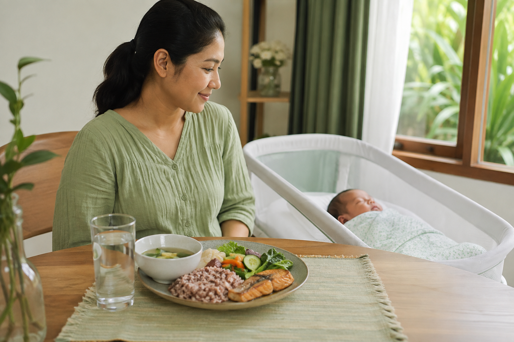
Utamakan makanan bergizi, cukup cairan, istirahat, dan dukungan keluarga.
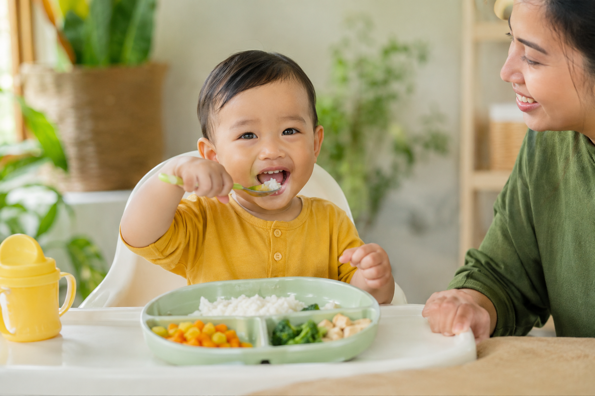
Mulai MPASI pada usia 6 bulan, lalu tingkatkan tekstur menuju menu keluarga.
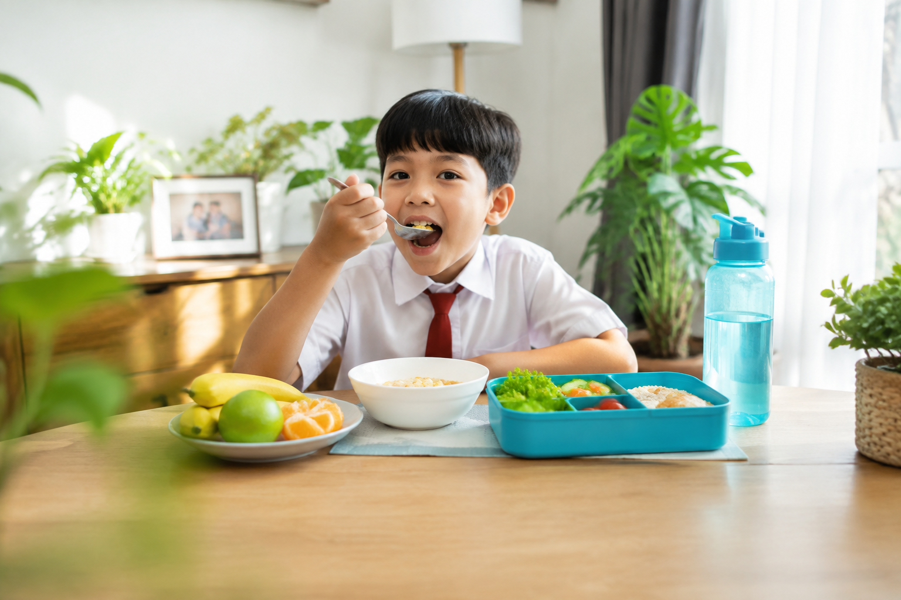
Biasakan sarapan, bekal bergizi, dan air putih; batasi jajanan berlebih.
Seimbangkan jumlah makanan dengan aktivitas dan pantau berat badan.
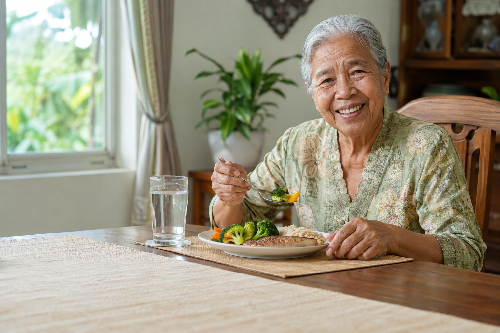
Sesuaikan energi; protein, serat, vitamin, mineral, dan cairan tetap penting.
Sumber modul: hlm. 54–57 (halaman PDF).
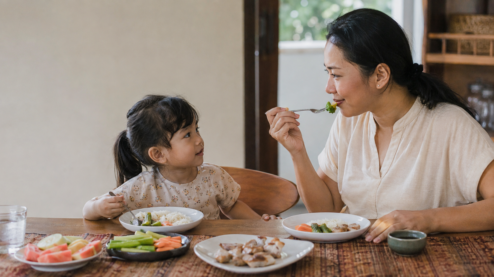
Sediakan makanan yang cukup, aman, dan bergizi sesuai kebutuhan anak.
Dampingi anak dengan hangat, sabar, dan tanpa memaksa saat waktu makan.
Berikan contoh dan biasakan anak memilih serta mencoba makanan sehat.
Sumber modul: hlm. 57–58 (halaman PDF).
Empat pola dibedakan dari tingkat kehangatan, aturan, dan keterlibatan orang tua saat anak makan.
Ciri: Aturan sangat ketat, anak dipaksa makan, dan sedikit ruang untuk bicara.
Dampak: Anak takut makan dan kurang mandiri; 56% rentan gizi kurang dalam temuan modul.
Ciri: Anak terlalu bebas memilih tanpa panduan gizi yang jelas.
Dampak: Anak cenderung memilih makanan kurang sehat, sulit diatur, dan berisiko kegemukan.
Ciri: Orang tua kurang terlibat; penyediaan makanan dan waktu makan tidak konsisten.
Dampak: Anak berisiko kekurangan zat gizi dan terlambat membangun kebiasaan makan sehat.
Ciri: Aturan jelas dan tegas, tetap hangat, dengan komunikasi dua arah.
Dampak: Anak makan lebih bergizi dan mandiri; 7,4% mengalami gizi kurang/buruk dalam temuan modul.
Akses pangan dan pendapatan, pengetahuan keluarga, sanitasi dan penyakit infeksi, serta waktu pengasuh dan pembagian tugas turut menentukan status gizi anak.
Sumber modul: hlm. 59–61 (halaman PDF), Tabel 1.2 dan uraian dampak pola asuh.
Kebiasaan sederhana akan lebih efektif jika dilakukan secara konsisten oleh semua pengasuh.
Tetapkan waktu makan utama dan selingan yang konsisten.
Ganti-ganti makanan pokok, lauk, sayur, dan buah.
Orang tua mengatur menu dan waktu. Anak menentukan jumlah.
Jauhkan gawai. Hindari ancaman, tekanan, dan paksaan.
Orang dewasa ikut menikmati makanan sehat.
Pantau berat, tinggi, dan perkembangan anak setiap bulan.
Sumber modul: hlm. 63–65 (halaman PDF).
Tiga aturan dasar membantu anak mengenali lapar, kenyang, dan rutinitas makan.
Sumber modul: hlm. 66–72 (halaman PDF), bagian Aturan Dasar Pemberian Makan.
Kenali tandanya: anak menutup mulut, memalingkan kepala, menangis, atau mulai sangat kesal.
Berikan makanan kembali dengan tenang. Hindari bujukan berlebihan dan jangan memaksa anak membuka mulut.
Amati respons anak. Waktu ini memberi kesempatan anak menerima makanan tanpa tekanan.
Jika anak tetap menolak atau sangat kesal, hentikan sesi makan dengan tenang dan lanjutkan pada jadwal berikutnya.
Tujuannya menjaga pengalaman makan tetap positif dan membantu anak mengenali sinyal lapar serta kenyang.
Sumber modul: hlm. 72–73 (halaman PDF), bagian Cara Menghadapi Penolakan secara Halus.
Anak usia dini lebih mudah belajar melalui pengalaman yang konkret dan melibatkan banyak indera.
Pilih tayangan singkat sesuai usia dan dampingi anak saat menonton.
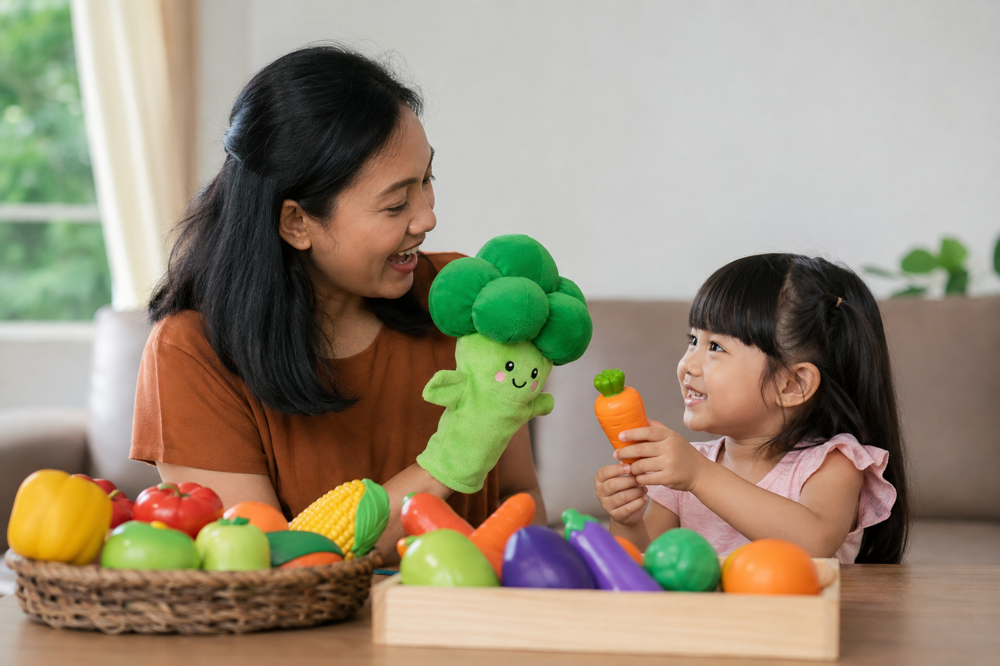
Sampaikan fungsi makanan melalui cerita dan permainan peran.
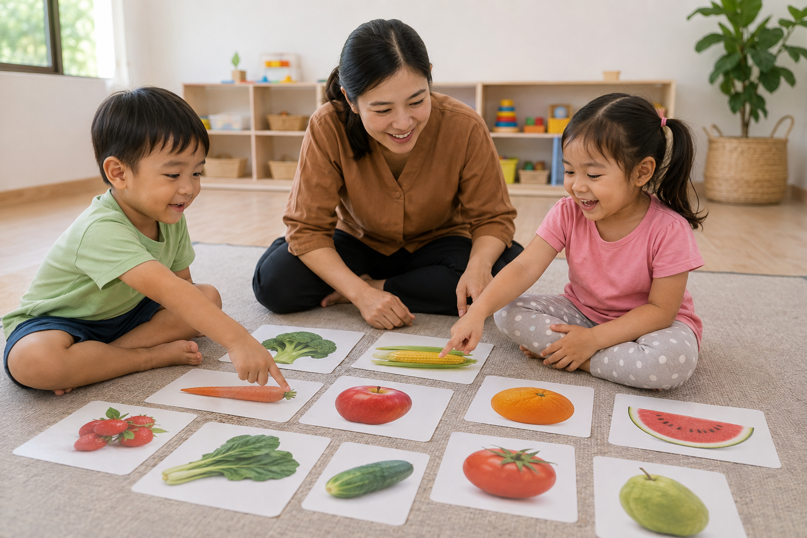
Ajak anak menebak nama, warna, atau manfaat buah dan sayur.
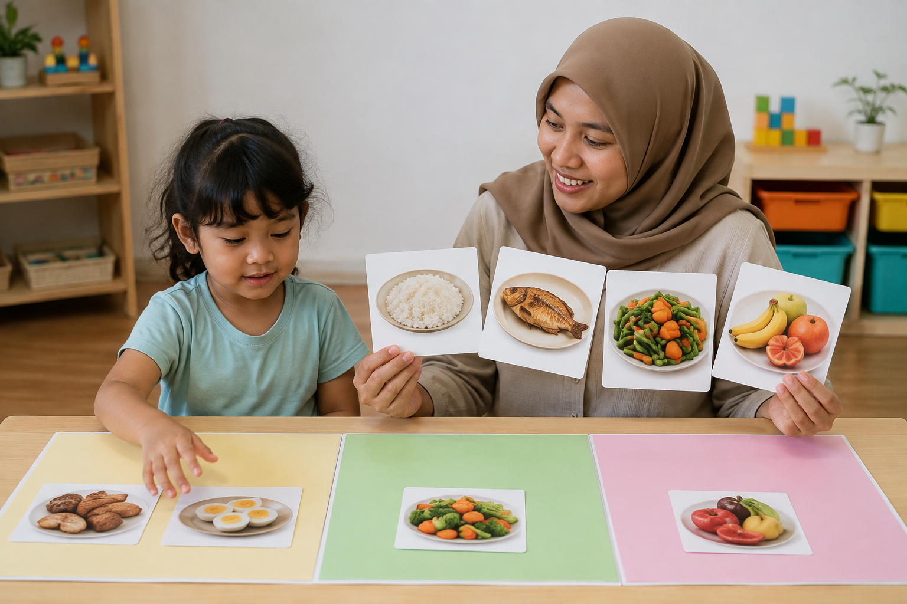
Gunakan gambar makanan pokok, lauk, sayur, dan buah untuk latihan mengenali pilihan bergizi.
Sumber modul: hlm. 73–79 (halaman PDF), bagian Edukasi Pemberian Makanan Sehat pada Anak Usia Dini.
31 · Keracunan makanan · Cara terjadinya
Bahaya masuk melalui makanan atau minuman. Mikroba dapat menyebabkan sakit melalui dua mekanisme berikut.
Mikroba menghasilkan racun di dalam makanan. Racun tersebut kemudian tertelan dan menimbulkan gejala.
Mikroba hidup ikut tertelan melalui makanan, lalu berkembang atau menyebabkan gangguan di dalam tubuh.
Makanan terkena mikroba atau bahan berbahaya.
Penyimpanan yang tidak aman memberi mikroba waktu untuk tumbuh.
Pemasakan atau penanganan tidak cukup menghilangkan bahayanya.
Sumber modul: hlm. 82–86 (halaman PDF). Bahan kimia dan toksin alami juga dapat menyebabkan keracunan; tidak semua toksin hilang saat dimasak.
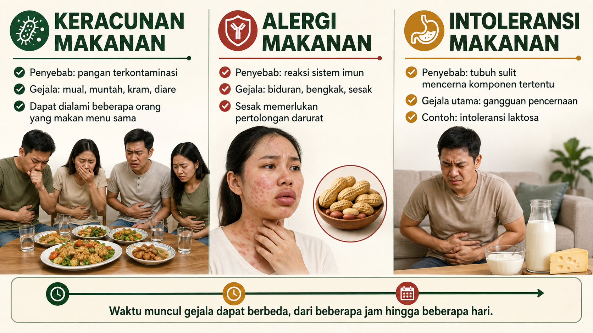
33 · Keracunan makanan · Pertolongan awal
Jangan lanjutkan konsumsi. Hubungi kader atau tenaga kesehatan dan ingat makanan yang terakhir dikonsumsi.
Berikan oralit sesuai petunjuk kemasan, sedikit demi sedikit, hanya bila korban sadar dan mampu menelan.
Segera ke Puskesmas atau rumah sakit jika muntah terus, demam tinggi, sangat lemas, mata cekung, atau urin sedikit.
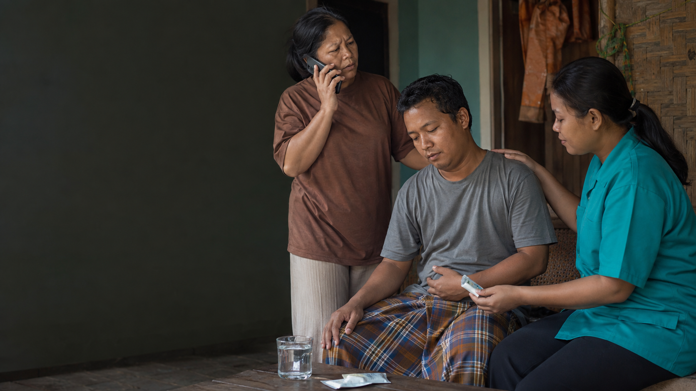
Sumber modul: hlm. 92–93 dan 95–97 (halaman PDF). Batas oralit dan larangan tindakan: editorial keselamatan.
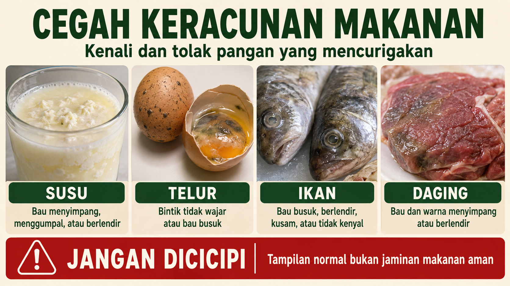
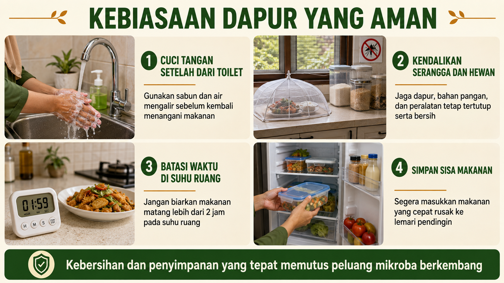
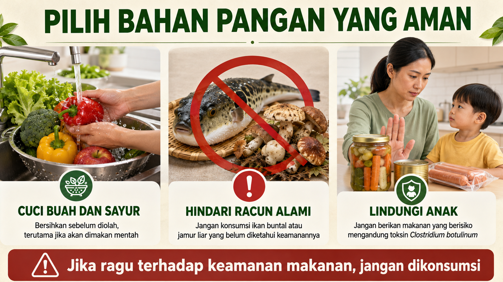
37 · Keracunan makanan · Pelaporan KLB
Pertolongan korban berjalan bersamaan dengan laporan kewaspadaan dini.
Hubungi fasilitas kesehatan atau Puskesmas segera setelah ditemukan indikasi keracunan massal.
FKTP melapor ke Puskesmas, lalu Dinkes kabupaten atau kota meneruskan ke provinsi dan pusat.
Sampaikan laporan kewaspadaan dini kurang dari 24 jam. Data yang belum diketahui dapat dilengkapi kemudian.
Petugas mewawancarai korban, menelusuri bahan dan proses, serta mengambil sampel sesuai prosedur.
Lokasi dan waktu kejadian, jumlah terpapar, sakit, dirawat, atau meninggal, gejala dominan, serta makanan atau minuman yang dicurigai.
Puskesmas dan Dinas Kesehatan mengoordinasikan investigasi, pemeriksaan laboratorium, pengendalian sumber, serta laporan akhir.
Sumber modul: hlm. 98–103 (halaman PDF), bagian prosedur pelaporan KLB keracunan massal.
Semoga bermanfaat untuk keluarga yang sehat dan aman
Ummu Atiyah, S.Ag.